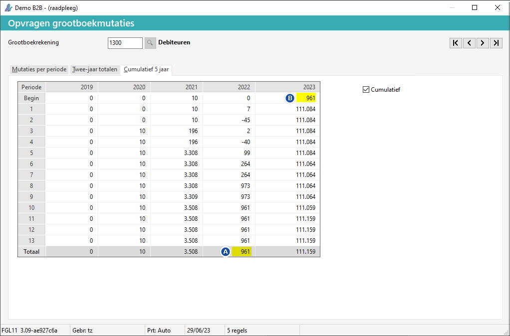

In Menu 3.0 is dit: 
#=nummer
Het volgende kan zich voordoen bij de subadministratie van debiteuren en/of crediteuren:
Het saldo van de Debiteuren open posten (DLP) zie #2 is niet gelijk aan de grootboekrekening(en) debiteuren (GO).
Het saldo van de Crediteuren open posten (KLP) zie #3 is niet gelijk aan het grootboek crediteuren (GO).
In Menu 3.0 is dit:
#=nummer
Om de saldo's te controleren (in dit geval van de debiteuren), doorloopt u de volgende stappen:
Ga naar Opvragen grootboekmutaties (GO).
In Menu 3.0 onder  Financieel > Financieel basis.
Financieel > Financieel basis.
Ga naar tabblad Cumulatief 5 jaar.
Controleer of het eindsaldo van dit jaar (A) gelijk is aan het beginsaldo van het volgend jaar (B).

Als het verschil geldt voor het huidige jaar, neem dan de beginbalans over:
Zie Overnemen beginbalans (GPA).
Als het vorig jaar betreft, neem dan contact op met de helpdesk.
Copyright ©